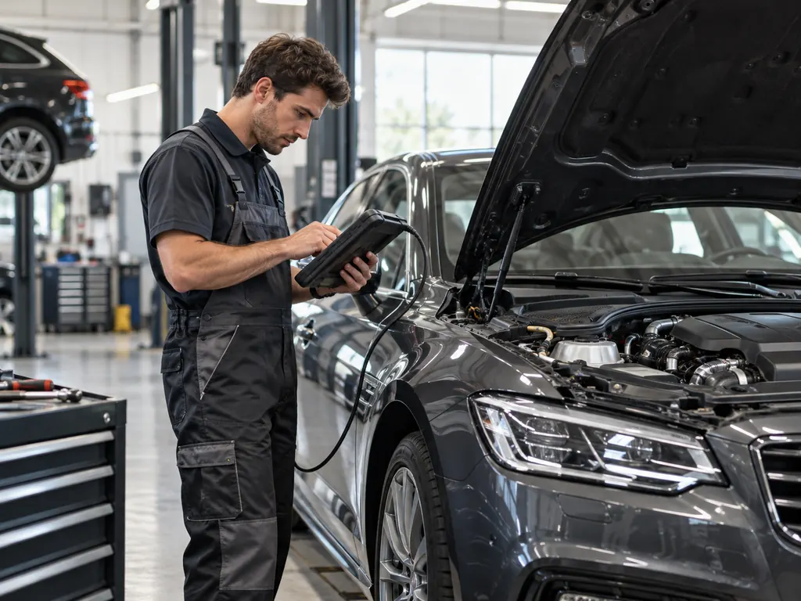
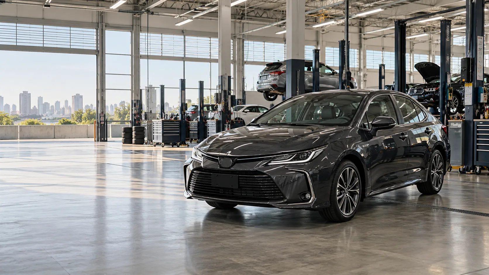
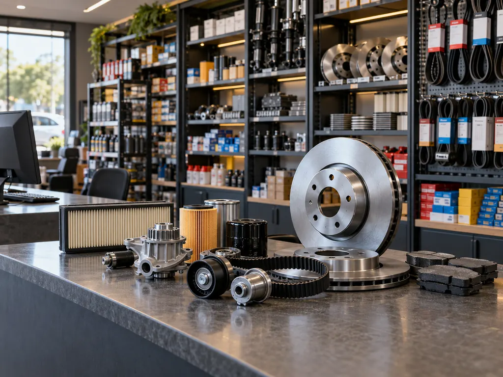
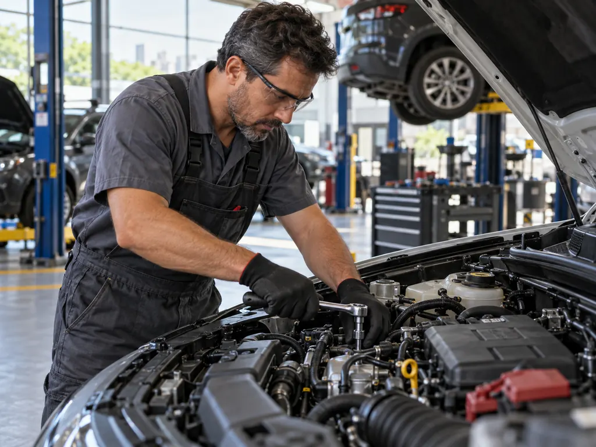
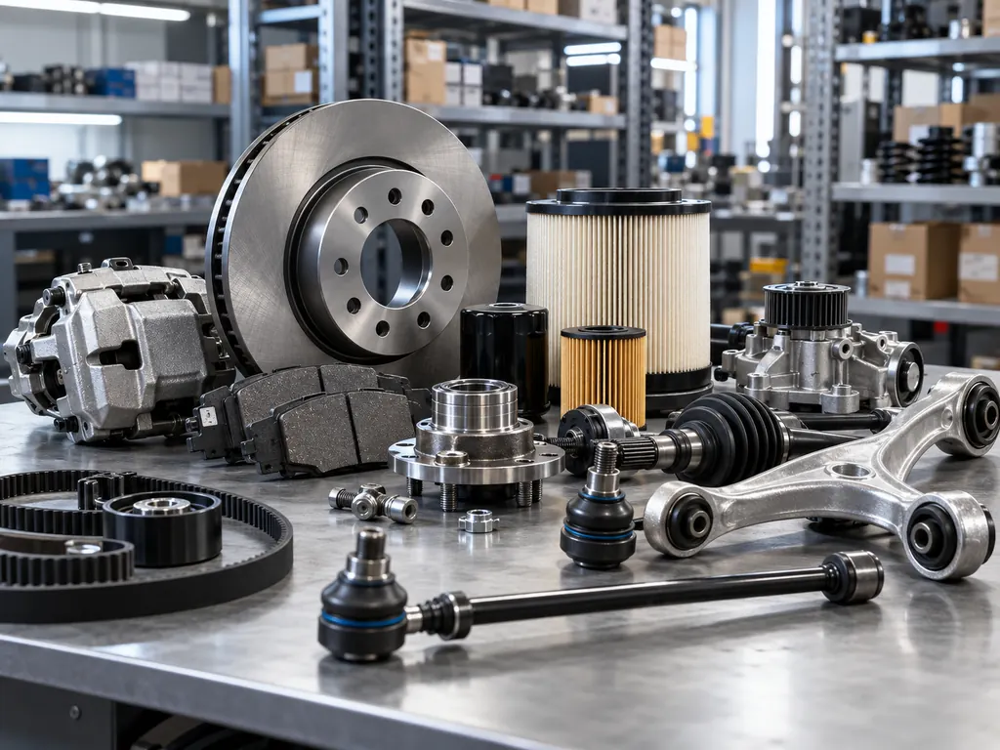
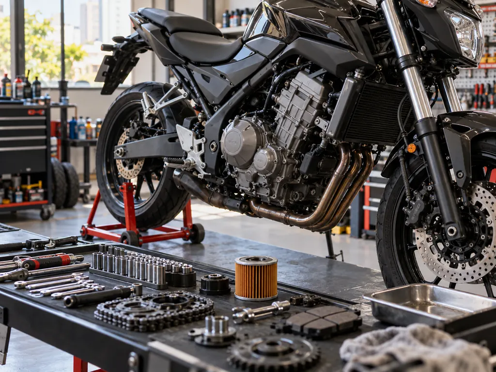
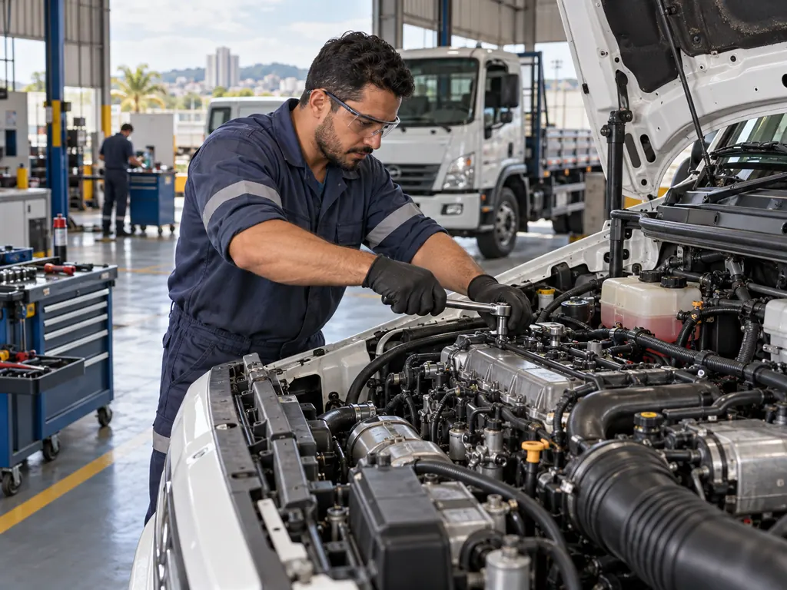
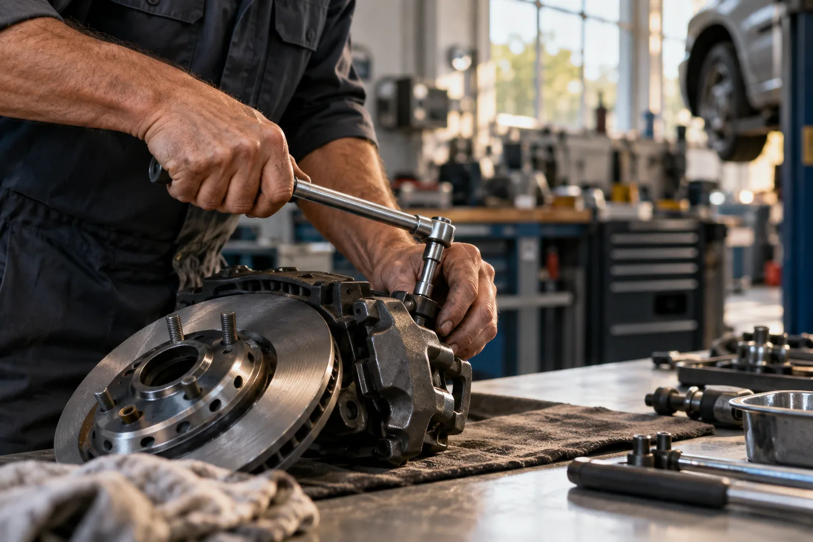

Platinus Motors
Mecânica geral, diagnóstico e cuidados automotivos, com atenção à performance e à manutenção do veículo.
Conhecer a Platinus Motors
Desde 1988 na Zona Sul de São Paulo, reunindo empresas e soluções em serviços automotivos, autopeças, motopeças, bike parts e diesel.
Conheça as empresas que fazem parte desta apresentação da Rede BRR e acesse diretamente seus canais para explorar serviços e produtos.

Mecânica geral, diagnóstico e cuidados automotivos, com atenção à performance e à manutenção do veículo.
Conhecer a Platinus Motors
Peças e componentes para manutenção automotiva, com catálogo e outras especialidades apresentadas em seu canal oficial.
Conhecer a Fullsize
Empresa apresentada pela Rede BRR no segmento de serviços automotivos. Especialidades e canais próprios aguardam confirmação.
Consultar a rede sobre a Sampacar
Autopeças e componentes automotivos, com opções de peças e serviços apresentados em sua loja oficial.
Conhecer a Interlagos PartsImagens ilustrativas geradas para este conceito. Fotografias dos estabelecimentos e assinaturas oficiais serão integradas após aprovação.
Um panorama objetivo das áreas informadas pela Rede BRR. Escolha uma área para enviar sua necessidade direto à rede, ou consulte cada empresa.
Ver empresas da redeManutenção e cuidados técnicos para veículos.
Componentes e itens de reposição para diferentes aplicações.
Peças para necessidades de manutenção de motocicletas.
Peças e componentes para bicicletas.
Peças e soluções relacionadas a veículos diesel.



A trajetória da Rede BRR tem origem em 1988, na Zona Sul de São Paulo. Uma história ligada ao trabalho automotivo que hoje conecta diferentes especialidades e empresas.
Mais do que reunir nomes, a proposta é facilitar o encontro entre quem procura soluções e as empresas que atuam em cada área.
Conte o que você procura e a Rede BRR leva sua mensagem para a área certa. Se preferir, siga direto para o canal de cada empresa.